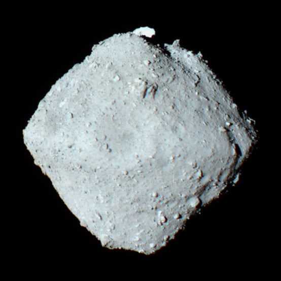
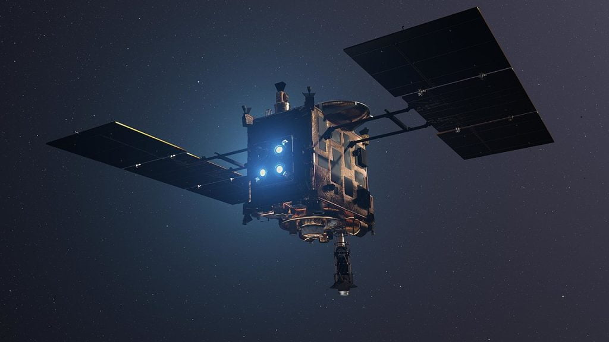
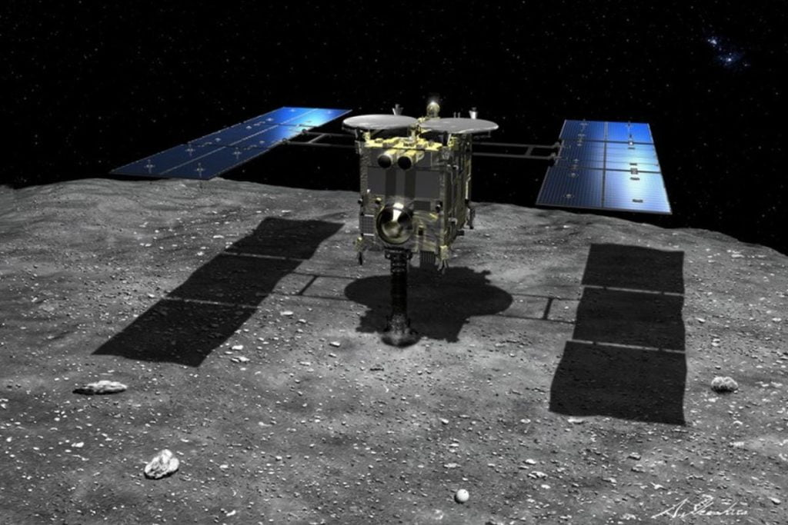

ဒါဟာ မျိုးရိုးဗီဇကို ဖြစ်စေတဲ့ RNA နဲ့ DNA တွေကို ဖွဲ့စည်းထားတဲ့ ဒြပ်ပေါင်း တစ်ခုကို ကမ္ဘာ အပြင်ဖက်မှာ ပထမဆုံး ရှာဖွေ တွေ့ရှိခြင်းပဲ ဖြစ်ပါတယ်။
အခု ရှာဖွေ တွေ့ရှိမှုဟာ အသက်ဇီဝဟာ ကမ္ဘာပေါ်ကို ကမ္ဘာအပြင် ဖက် အာကာသ ထဲကနေ ရောက်ရှိလာ ခဲ့တယ် ဆိုတဲ့ သီအိုရီအတွက် အထောက်အထား တစ်ခုပဲ ဖြစ်ပါတယ်။ ဒါ့အပြင် ကမ္ဘာ အပြင်ဖက် နေအဖွဲ့အစည်းရဲ့ တစ်နေရာမှာ အဆင့်နိုမ့် သက်ရှိတွေ ရှိနေ နိုင်တယ်ဆိုတဲ့ အချက်ကို ညွှန်ပြတဲ့ အထောက်အထား တစ်ခုဲ ဖြစ်ကောင်း ဖြစ်နိုင်ပါတယ်။
အခု သုတေသနကို ဂျပန် နိုင်ငံက သုတေသီ တွေက ပြုလုပ်ခဲ့တာ ဖြစ်ပါတယ်။ သူတို့ဟာ ဂျပန် သုတေသန အာကာသယာဉ်ကနေပြီး Rhugu ဂြိုဟ်သိမ်ပေါ်ကနေ နမူနာ ကောက်ယူလာ ခဲ့တဲ့ မြေသား နမူနာကို ဓါတ်ခွဲစမ်းသပ်အပြီးမှာ ဒီ တွေ့ရှိချက်ကို တွေ့ရှိ ခဲ့ကြတာ ဖြစ်ပါတယ်။
ဂျပန် သုတေသီ တွေဟာ ရူဂူဂြိုဟ်သိမ်ရဲ့ မြေသား နမူနာ ထဲမှာ uracil ဆိုတဲ့ ဒြပ်ပေါင်းကို ရှာဖွေ တွေ့ရှိခဲ့ ကြပါတယ်။ ဒီ ဒြပ်ပေါင်းဟာ ကမ္ဘာပေါ်က လူသားတွေနဲ့ သက်ရှိတွေရဲ့ မျိုးရိုးဗီဇ ဖြစ်တဲ့ RNA ကို ဖွဲ့စည်းထားတဲ့ အခြေခံ ဒြပ်ပေါင်း ၅ ခု အနက်က တစ်ခု ဖြစ်ပါတယ်။
ဒီ uracil ဟာ သက်ရှိတွေရဲ့ မျိုးရိုးဗီဇ ဒြပ်ပေါင်း မော်လီကြူးတွေ တည်ဆောက်ရာမှာ မရှိမဖြစ် လိုအပ်တဲ့ အခြေခံ ဒြပ်ပေါင်း တစ်ခု ဖြစ်ပါတယ်။

ယခင်က ကမ္ဘာပေါ်ကို ကျရောက်ခဲ့တဲ့ ဥက္ကာခဲ တွေကို ဓါတ်ခွဲ စစ်ဆေးချက် အရ ဒီ ဥက္ကာခဲ တွေအတွင်းမှာ မျိုးရိုးဗီဇကို ဖန်တီးတဲ့ အခြေခံ သကြား ဒြပ်ပေါင်း ၅ မျိုးကို ရှာဖွေ တွေ့ရှိ ခဲ့ဖူးပါတယ်။ ဒါပေမယ့် သိပ္ပံ ပညာရှင်တွေ အကြားမှာ ဒီ မော်လီကြူး ဒြပ်ပေါင်း တွေဟာ ဥက္ကာပျံ နဲ့အတူ အာကာသ ထဲကနေ ဝင်ရောက် လာကြသလား (သို့မဟုတ်) ကမ္ဘာမြေပေါ် ရောက်ပြီး ကမ္ဘာနဲ့ တိုက်မိပြီးမှ ဥက္ကာပျဲ အထဲ ရောက်ရှိ လာကြသလား ဆိုတာ မဆုံးဖြတ်နိင်ခဲ့ဖူး ဖြစ်နေပါတယ်။
ဒါပေမယ့် အခု ရူဂူ ဂြိုဟ်သိမ်က နမူနာ မြေသား တွေကတော့ အာကာသ ထဲမှာ နမူနာ ယူပြီး လေလုံဗူး တွေနဲ့ ထည့်သွင်းသယ်ဆောင်ကာ ကမ္ဘာကို ပြန်ပို့ ခဲ့ကြတာ ဖြစ်ပါတယ်။ ဒါ့ကြောင့် ဒီ ဒြပ်ပေါင်းတွေဟာ ကမ္ဘာအပြင်က ရောက်ရှိလာခဲ့တယ် ဆိုတာကို အငြင်းပွား နေစရာ မရှိတော့ ပါဘူး။
အခု သုတေသန ရလဒ်ကြောင့် ကမ္ဘာပေါ်ကို အသက်ဇီဝဟာ ကမ္ဘာပြင်ပကနေ ရောက်ရှိလာတယ် ဆိုတဲ့ သီအိုရီ အတည် ပြုနိုင်ဖို့ ခြေတလှမ်း နီးလာပြီလို့ ဆိုနိုင်ပါတယ်။ ဒါ့အပြင် ကမ္ဘာ ပြင်ပမှာ သက်ရှိတွေ အနှံ့အပြား ရှိနေနိုင်တယ် ဆိုတဲ့ အချက်ကိုလဲ ညွှန်ပြနေပါတယ်။
အခု သုတေသန ရလဒ်တွေကို မတ်လ ၂၁ ရက်နေ့ထုတ် Nature Communications သုတေသန ဂျာနယ်မှာ စာတမ်း ပြုစု တင်ပြ ထားတာ ဖြစ်ပါတယ်။
“Uracil နဲ့ အခြား မျိုးရိုးဗီဇ အခြေခံ ဒြပ်ပေါင်းတွေ အာကာသထဲ ရှိနေသရွေ့ မျိုးရိုးဗီဇ ဖြစ်ပေါ်ဖို့ လိုအပ်တဲ့ အခြေခံ ဒြပ်ပေါင်းတွေ ဒီ သဘာဝ ဝန်းကျင်မှာ ရှိနေတယ် ဆိုတာကို ပြနေတာပဲ ဖြစ်ပါတယ်” လို့ အခု သုတေသန ကို ဦးဆောင်သူ ယာဆူဟီရို အိုဘာ (Yasuhiro Oba) က ရှင်းပြပါတယ်။

“ကျွန်တော့်ရဲ့ တဦးထဲ အမြင်အရ ပြောရမယ်ဆို ကမ္ဘာပြင်ပ ပတ်ဝန်းကျင်မှာ အသက်ဇီဝ ဟာ ပုံသဏ္ဍန် တမျိုးမျိုးနဲ့ ရှိမနေဘူးလို့ ငြင်းချက်ထုတ်ဖို့ ဆိုတာ အလွန်ပဲ ခက်ခဲမှာ ဖြစ်ပါတယ်” လို့ သူက ဖြည့်စွက် ရှင်းပြပါတယ်။
သက်ရှိတွေရဲ့ မျိုးရိုးဗီဇ ဖြစ်တဲ့ DNA နဲ့ RNA တွေကို nucleobase ၅ မျိုးကို အခြေခံပြီး ဖွဲ့စည်းထားတာ ဖြစ်ပါတယ်။ ဒီ ၅ မျိုး အနက်က တစ်မျိုးမျိုးဟာ ဖော့စဖိတ် ဒြပ်ပေါင်း နဲ့ ribose သကြား ဒြပ်ပေါင်းတွေနဲ့ ပေါင်းစပ်ပြီး တဲ့နောက် DNA သို့ RNA မျိုးရိုးဗီဇ တွေအဖြစ် ဖြစ်ပေါ် လာကြတာ ဖြစ်ပါတယ်။
သက်ရှိတွေရဲ့ မျိုးရိုးဗီဇကို ဖြစ်ပေါ်စေတဲ့ ဒီ nucleobase ၅ မျိုးကတော့ adenine, guanine, cytosine, thymine နဲ့ uracil ဆိုတဲ့ ၅ မျိုးပဲ ဖြစ်ပါတယ်။ ဒီ ၅ မျိုး အခြင်းခြင်း ပေါင်းစပ်ပုံပေါ် မူတည်ပြီး မျိုးရိုးဗီဇ တွေ ဖြစ်ပေါ်လာရတာ ဖြစ်ပါတယ်။
(ဒီ ၅ မျိုးဟာ အက္ခရာ ၅ လုံးနဲ့ အသွင် တူပါတယ်။ တနည်းအားဖြင့် A, G, C, T နဲ့ U ဆိုပြီး အက္ခရာ ၅ လုံး ပါဝင်တဲ့ ဘာသာစကား တမျိုးပါပဲ။ ဒီ ဘာသာစကားဟာ မျိုးရိုးဗီဇ ဘာသာစကား ဖြစ်ပါတယ်။ ဒီ ၅ လုံး တွဲစပ်ပုံပေါ် မူတည်ပြီး စကားလုံးတွေ ဖြစ်ပေါ်လာ ရတာ ဖြစ်ပါတယ်။ ဥပမာ ACT, AGT, GTC အစ ရှိသဖြင့် ၃ လုံးစီ ၃ လုံးစီ အတွဲလေးတွေ တွဲပြီး စကားလုံးတွေ ဖြစ်ပေါ် လာရတာပါ။ ဒါဟာ မျိုးရိုးဗီဇ ဘာသာစကား ပဲ ဖြစ်ပါတယ်။)
ဒီ ဘာသာစကား ကို သက်ရှိ တွေရဲ့ ဆဲလ် တွေက ဖတ်နိုင်စွမ်း ရှိကြပါတယ်။ ဒီ ဘာသာစကားနဲ့ ရေးသားထားတဲ့ မျိုးရိုး ဗီဇကို သက်ရှိ ဆဲလ်တွေက ဖတ်ပြီးတဲ့နောက်မှာမှ ဘာတွေ ထုတ်ရမလဲ၊ ဘာတွေ လုပ်ရမလဲ ဆိုတာ ဆဲလ်တွေက ဆုံးဖြတ်ကြတာ ဖြစ်ပါတယ်။

DNA နဲ့ RNA ဘာကွာလဲ ဆိုတာ မေးခြင်ကြမှာပါ။ DNA ဟာ ဘာနဲ့ တူလဲ ဆိုတော့ မူရင်း ရေးမှတ်ထားတဲ့ မှတ်တမ်းနဲ့ တူပါတယ်။ သူ့ကို ခရိုမိုဆုမ်း ဆိုတဲ့ စာအုပ်ကြီး ထဲမှာ စာမျက်နှာတွေ ခွဲပြီး မှတ်တမ်းတင် သိမ်းဆည်း ထားပါတယ်။
ဒီ မှတ်တမ်း စာအုပ်ကြီး၊ တနည်းအားဖြင့် ညွှန်ကြားချက် ပရိုဂရမ်တွေ ရေးထားတဲ့ စာအုပ်ကြီး ထဲက ညွှန်ကြားချက် တွေကို လက်တွေ့ အကောင်အထည် ဖော်ပေးမယ့် စက်ရုံတွေ ရှိရာကို ညွှန်ကြားချက်တွေ သယ်ဆောင်ပေးဖို့ လိုပါတယ်။ ဒီလို ညွှန်ကြားချက် တွေကို စာအုပ်ကြီး ထဲက ကူးပြီး စက်ရုံရှိရာ သယ်ဆောင်လာ ပေးတဲ့ အလုပ်ကိုတော့ RNA က လုပ်ဆောင် ပေးပါတယ်။
ဂျပန် အာာကာသ အေဂျင်စီ Japan Aerospace Exploration Agency (JAXA) ဟာ Ryugu ဂြိုဟ်သိမ်ပေါ်က မြေသား နမူနာ ယူဖို့အတွက် ဟာယာဘူဆာ အမှတ် ၂ သုတေသနယာဉ် (Hayabusa2 spacecraft) ကို လွှတ်တင်ခဲ့တာ ဖြစ်ပါတယ်။
ဒီ အာကာသ သုတေသန ယာဉ်ဟာ ခရီး မိုင် သန်း ၂၀၀ ခန့်ကို ဖြတ်သန်းပြီး Ryugu ဂြိုဟ်သိမ် ရှိရာဆီ အရောက် သွားခဲ့ပါတယ်။ ဒီ ဂြိုဟ်သိမ်ဟာ ကာဗွန် အခြေခံ ဒြပ်ပေါင်း အများအပြားနဲ့ ဖွဲ့စည်း ထားတယ်လို့ ပညာရှင် တွေက ယုံကြည် ခဲ့ကြတာကြောင့် ဒီ ဂြိုဟ်သိမ်ပေါ်က မြေသားနမူနာကို ယူဖို့ ကြိုးပမ်းခဲ့ ကြတာ ဖြစ်ပါတယ်။
ဒီ ဂြိုဟ်သိမ်က မြေသားနဲ့ အခြား ဒြပ်ပေါင်းတွေဟာ လွန်ခဲ့တဲ့ နှစ်သန်း ၄,၆၀၀ ခန့် နေအဖွဲ့အစည်း စတင် ဖြစ်တည်စ ကတဲက အတူတကွ ဖြစ်ထွန်း လာခဲ့ကြတယ်လို့ ပညာရှင် တွေက ယူဆ ကြပါတယ်။ တနည်းအားဖြင့် နေ အဖွဲ့အစည်း မွေးဖွားစက ဓါတု ဒြပ်ပေါင်း တွေကို ရှာဖွေ သုတေသန ပြုဖို့ ကြိုးစားမှုပဲ ဖြစ်ပါတယ်။
ဟာယာဘူဆာ ၂ လေ့လာရေးယာဉ်ဟာ ၂၀၁၈ ခုနှစ် အတွင်းမှာ ဒီဂြိုဟ်သိမ်ကို ရောက်ရှိပြီး ဆိုက်ကပ် နိုင်ခဲ့ပါတယ်။ ဂြိုဟ်သိမ်ရဲ့ မျက်နှာပြင်ကနေ ၅.၄ ဂရမ် ပမာဏ ရှိတဲ့ မြေသား နမူနာကို ခြစ်ယူပြီး လေလုံဘူးထဲ ထည့်သွင်း သယ်ဆောင် နိုင်ခဲ့ပါတယ်။
ဒီ့နောက် မှာတော့ ဟာယာဘူဆာ ၂ ဟာ ကမ္ဘာမြေကို ပြန်လည် ခရီးနှင် ခဲ့ပြီး မြေသား နမူနာကို ကမ္ဘာမြေ အရောက် အောင်မြင်စွာ ပြန်လည် ပို့ဆောင် နိုင်ခဲ့ပါတယ်။
ဒီ မြေသား နမူနာ ကနေ အမီနို အက်ဆစ် (amino acid) ၁၅ မျိုး ကိုလဲ အံ့ဩဖွယ် ရှာဖွေ တွေ့ရှိ ခဲ့ပါသေးတယ်။
ဒီ အမိုင်နို အက်ဆစ်တွေ နဲ့ uracil တို့ဟာ ရှုပ်ထွေးတဲ့ အသက်ဇီဝ အခြေခံ ဒြပ်ပေါင်းတွေ ဖြစ်ကြပါတယ်။ ဒီလို ရှုပ်ထွေးတဲ့ ဇီဝဒြပ်ပေါင်းတွေ အာကာသ ထဲက ဂြိုဟ်သိမ် တစ်လုံးပေါ်မှာ ဘယ်လို ဖြစ်ပေါ် လာသလဲ ဆိုတာ သိပ္ပံ ပညာရှင်တွေ ရှင်းပြနိုင်စွမ်း မရှိကြ သေးပါဘူး။
သီအိုရီ တစ်ခုကတော့ စွမ်းအားမြင့်မားတဲ့ အာကာသ ရောင်ခြည်တွေ သက်ရောက်မှုကြောင့် ဒီ မော်လီကျူးတွေ ဖြစ်ပေါ်လာ ရတာဆိုတဲ့ သီအိုရီ ပဲ ဖြစ်ပါတယ်။
ဒီ သီအိုရီ အရ အာကာသ ထဲက ဂြိုဟ်သိမ် တွေနဲ့ ဥက္ကာခဲ တွေပေါ်မှာ ဒီလိုနည်းနဲ့ ဖြစ်ပေါ်လာ ခဲ့တဲ့ ဇီဝ ဒြပ်ပေါင်းတွေဟာ ကမ္ဘာပေါက်ကို ဥက္ကာခဲ တွေနဲ့အတူ ကျရောက်ပြီး အသက်ဇီဝတွေ ပေါင်ပွားလာ ကြတယ် ဆိုတဲ့ သီအိုရီပဲ ဖြစ်ပါတယ်။
Rhugu ဂြိုဟ်သိမ် တစ်ခုထဲ ကနေ မြေသား နမူနာ ယူခဲ့တာ မဟုတ်ပါဘူး။ ၂၀၂၁ ခုနှစ် အတွင်းကလဲနာဆာရဲ့ OSIRIS-REx အာကာသ ယာဉ်ဟာ ဘန်နု ဂြိုဟ်သိမ် (Bennu) ကနေပြီး မြေသား နမူနာ အောင်မြင်စွာ ယူနိုင် ခဲ့ပါတယ်။
ဒီ ဘန်နုက ရယူခဲ့တဲ့ မြေသား နမူနာဟာ လာမယ့် နှစ်များအတွင်း ကမ္ဘာပေါ်ကို ပြန်လည် ရောက်ရှိလာ တော့မှာ ဖြစ်ပါတယ်။ ဒီ မြေသား နမူနာမှာလဲ ဇီဝ ဒြပ်ပေါင်းတွေ တွေ့ခဲ့မယ် ဆိုရင် အသက်ဇီဝ ဟာ အာကာသ ထဲက ရောက်လာတယ် ဆိုတဲ့ သီအိုရီ အတွက် ခိုင်မာတဲ့ အထောက်အထား တစ်ခု ဖြစ်လာတော့မှာ ဖြစ်ပါတယ်။
Ref: Key building block for life discovered on distant asteroid Ryugu — and it could explain how life on Earth began | Live Science